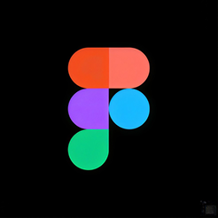
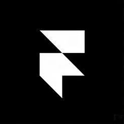
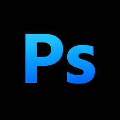
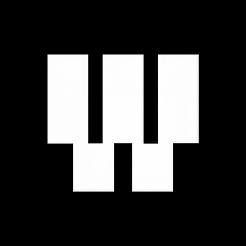
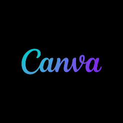
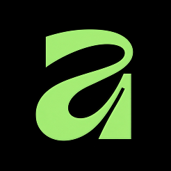

Available for new projects · 2026
UI/UX designer making complex products feel simple.
I’m a UI/UX Designer focused on creating simple, intuitive, and meaningful digital experiences. I enjoy solving real user problems through thoughtful design, clear interfaces, and purposeful interactions. Based in Kerala, India, I work across web and mobile products with a focus on making every experience feel effortless.
About
Portrait + story
.png)
Adith M S
When design feels invisible, the experience becomes unforgettable.
I got into design because I’ve always been curious about how people use and experience things. That curiosity led me to UI/UX, where I’ve worked on web and mobile experiences, turning ideas and problems into simple, practical designs. When starting a project, I care most about understanding the people who will use it, what they need, and how the experience can make their lives a little easier.
I like working closely with teams, listening to different perspectives, and keeping the conversation open throughout the process. With clients and users, I try to understand what they really need rather than just what they ask for. Outside of design, curiosity keeps me going
- Based in
- Kerala, India
- Experience
- Fresher
- Currently
- Intern at Knovista
- Education
- BCA, Calicut university
- Languages
- English,Malayalam
- Resume
- Click here !






Selected work
04 projects · 20XX – 20XX
What I do
Services
User research
Interviews, surveys and usability tests that turn assumptions into evidence.
Interaction design
Flows, wireframes and prototypes that make the product easy to move through.
Visual design
Typography, colour and layout that give the product a clear voice.
Design systems
Component libraries and guidelines that keep teams consistent as they grow.
How I work
Four stages
Understand
Describe how you learn about the people, the goals and the constraints.
Frame
Describe how you turn findings into a clear problem and a plan.
Explore
Describe how you sketch, prototype and test ideas with users.
Ship
Describe how you hand off to developers and measure the result.
Kind words
Testimonial
A short testimonial from a client or colleague goes here, one or two sentences about working with you.
Contact